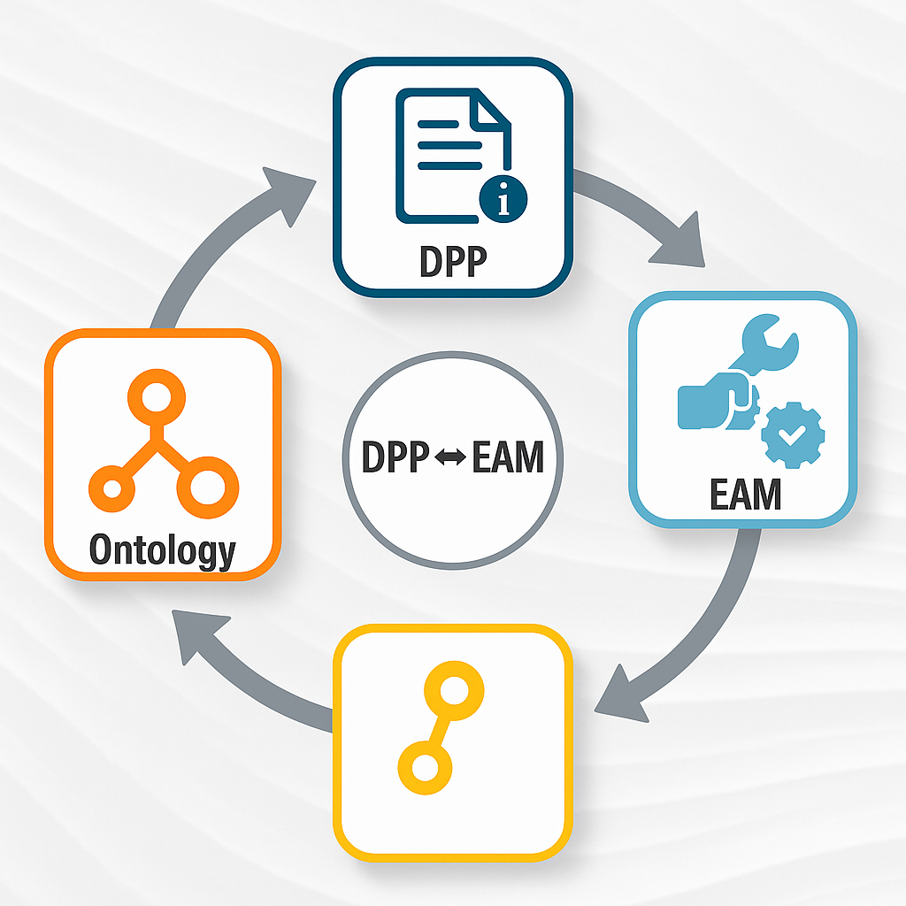

This repository is part of the Digital Product Passport Systems for Sustainability (Pass4Sustainability) initiative and supports the master’s thesis project titled “Ontology-Based Approach to Integrating Digital Product Passport Data into Enterprise Asset Management Systems”, conducted at Jönköping University. The study introduces a modular, ontology-based integration framework that connects Digital Product Passports (DPPs) with Enterprise Asset Management (EAM) systems. By applying semantic technologies and RESTful APIs, the framework enables seamless querying, updating, and sharing of lifecycle product data across systems. The overarching goal is to improve asset traceability, ensure regulatory compliance, and support informed decision-making, all while advancing the transition toward a more circular and sustainable economy.
